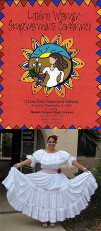

HOME
Latina Empowerment Conference Poem "¿Que Ves?" by Daisy Cruz |
||||
|
In February, I was asked to speak at the 3rd Annual Latina Empowerment Conference at my former high school, Mount Miguel High School. I gave an introductory speech, and at the end of the ceremony recited a poem that I wrote entitled "What Do You See?" This conference primarily serves as a form of encouragement for teenage girls of Hispanic heritage and their mothers. Some of the important topics that were covered include the importance of education and self-empowerment, as well as financial help for obtaining higher levels of education, and a focus on the importance of mentorship and positive influences. About three years ago, when the first Latina Empowerment Conference took place, I was approached by Silvia Sposato, the Principal's Secretary, asking me to help her design a logo that would serve as a symbol for the conference. I felt honored and ecstatic and immediately jumped on Photoshop in an attempt to design an illustration that would capture the essence of feminity and a woman with rich, Hispanic culture. I was able to come up with a colorful design, which is still used as the main logo of the conference. When I first attended this conference, it left me with a lasting impression and a positive outlook on life. I recognized that my culture, my Hispanic roots, were elements in themselves to encourage me to push myself further, while reaching uncharted heights. A college education would be the major key that will assist me in making a difference in the world I live in. After the recital of my speech, I hoped to have influenced other girls, just as I was, by listening to the various motivational speakers. My inspirational poem was written in hopes to do just that; inspire. To inspire our youth to prevail even through the toughest of situations. To remind others to never give up and learn to see tomorrow with optimism. Success will only be brought to us if we endure the many struggles that are thrown our way, and at the end, those struggles are what make us strong and capable leaders.
|
||||